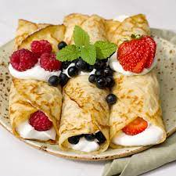

Swedish Apple pie

Swedish styled pancakes with whipped cream and berries
Description
You’ll find these very similar to crepes. Thin, sweet, and delicate, they are a great little snack or
dessert with the right toppings.
Ingredients
Pancakes
- 2 cups milk
- 4 eggs
- 1 tablespoon canola oil
- 1-1/2 cups all-purpose flour
- 3 tablespoons sugar
- 1/4 teaspoon salt
Topping optional
- Whipped cream
- Sugar
- Jam any type
- Berries any type
Steps
- In a blender, combine the first six ingredients. Cover and process until blended. Heat a lightly greased 8-in. nonstick skillet; pour 1/4 cup batter into center. Lift and tilt pan to evenly coat bottom.
Cook until top appears dry; turn and cook 15-20 seconds longer.
- Repeat with remaining batter, adding oil to skillet as needed. Stack pancakes with waxed paper or paper towels in between.
Reheat in the microwave if desired.
- Fold pancakes into quarters; serve with berries,
raspberry jam and whipped topping.